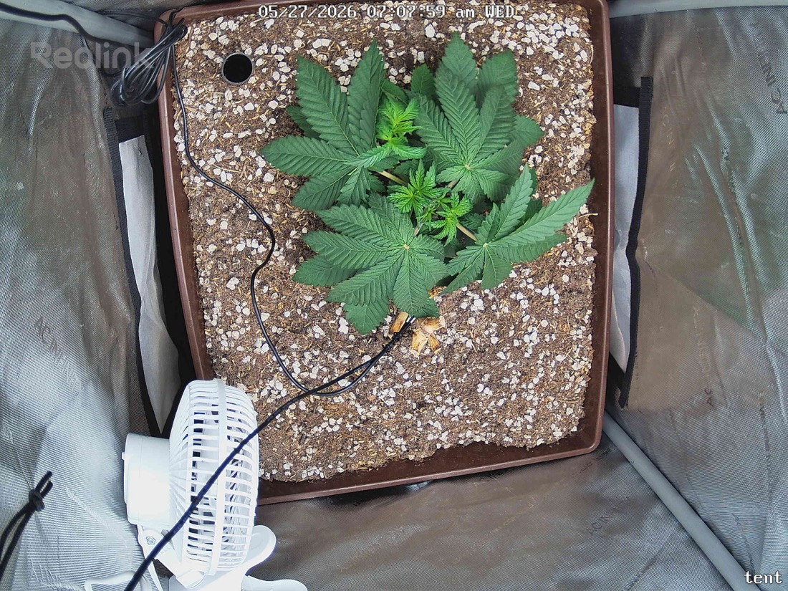

← All reports
May 27, 2026
Wed May 27, 2026 — 7:07 AM

Prognosis
Daily check-in — Day 29 from germ, ~4 days post-top
- What changed: Visible expansion at the topped site — the two lateral nodes below the cut are clearly waking up and pushing new growth (small light-green leaflets centered between the mains). Overall canopy looks slightly more "opened up" vs. yesterday as side branches reach for light.
- Color & posture: Uniform deep green across all fans, leaves flat (no praying, no taco, no cup), petioles holding strong horizontal posture. No burnt tips, no edge necrosis, no interveinal patterning.
- Topping site: Healing cleanly — small visible stub but no rot, no discoloration, no oozing. Auxin redistribution is doing its job.
- Soil surface: Dry-ish/light colored on top crust — consistent with day 4 since last watering on 5/23. Probably approaching next water in the next 24–48h depending on pot weight.
- Stress signs: None. No pests, no powdery mildew, no leaf damage beyond the intentional top cut.
- Phase check: Day ~29 from germ, ~22 days in tent, recently topped — exactly on schedule for early veg. Internode spacing is tight (good — confirms 400 PPFD isn't too low), and the two new tops are responding fast which is the textbook outcome you want post-top.
- Next actions: No action needed today. Lift the pot — if it feels light, water tomorrow; otherwise hold one more day. Keep PPFD at 400 while she rebuilds canopy mass before considering another bump or LST.
Overall: Healthy, vigorous response to the top — two new tops emerging on cue and zero stress markers. Stay the course.